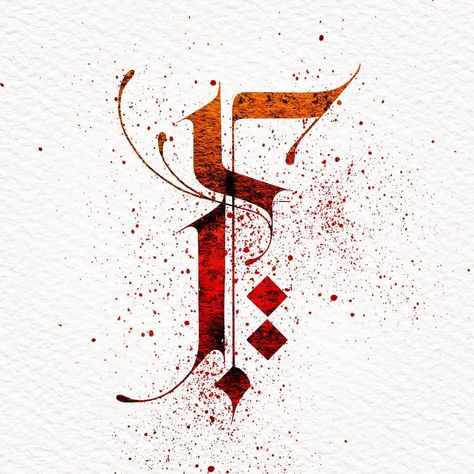

<mat-toolbar color="primary">
    
    
    <h1>urnicoDecor</h1>
    <span class="space"></span>

    <p>
        <mat-form-field appearance="legacy">
          <mat-label>Legacy form field</mat-label>
          <input matInput placeholder="Placeholder">
          <mat-icon matSuffix>sentiment_very_satisfied</mat-icon>
          <mat-hint>Hint</mat-hint>
        </mat-form-field>
      </p>

      <span class="space"></span>
      
    <button mat-button>Home</button>
    <button mat-raised-button>About</button>
    <button mat-raised-button>Gallery</button>
    <button mat-raised-button>Contact Us</button>
   <!-- <a mat-raised-button color="warn" routerLink=".">Link</a>-->
    
</mat-toolbar>
